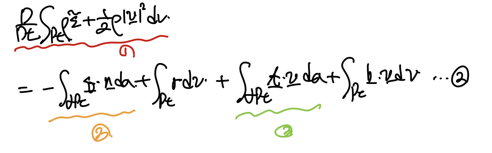
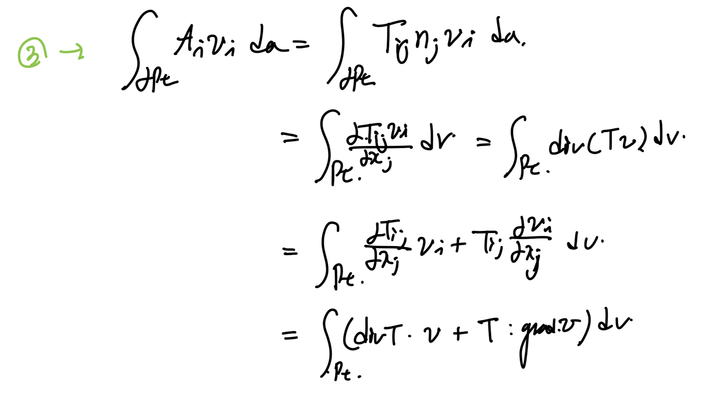
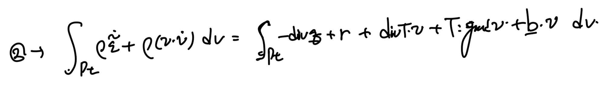
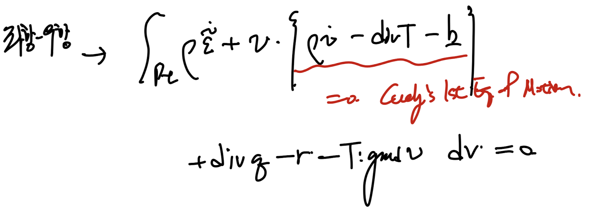
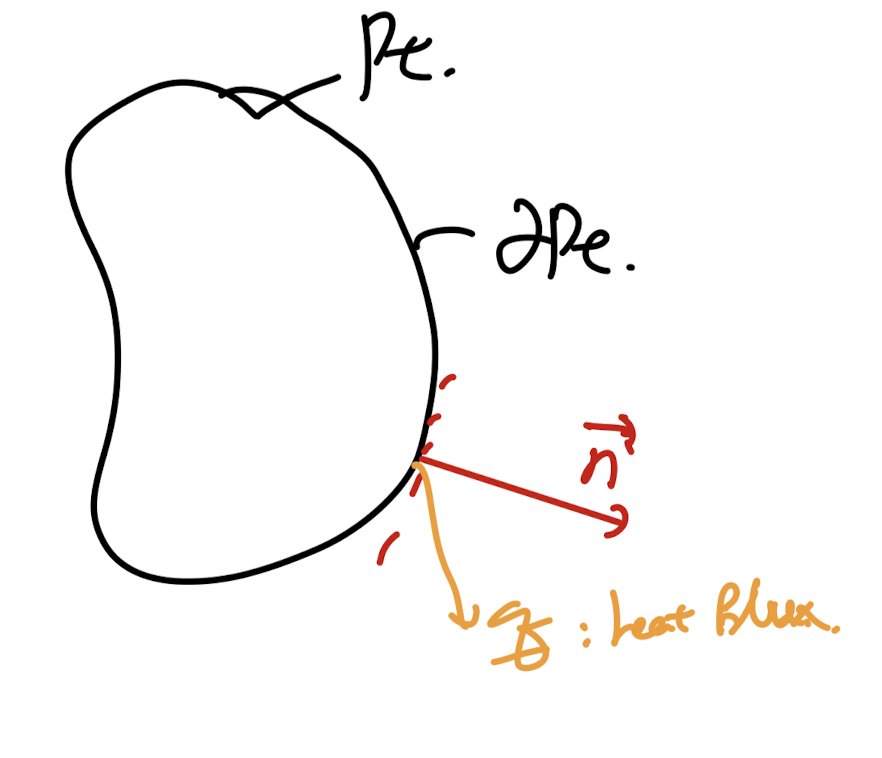
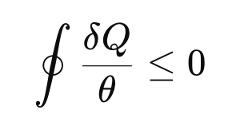
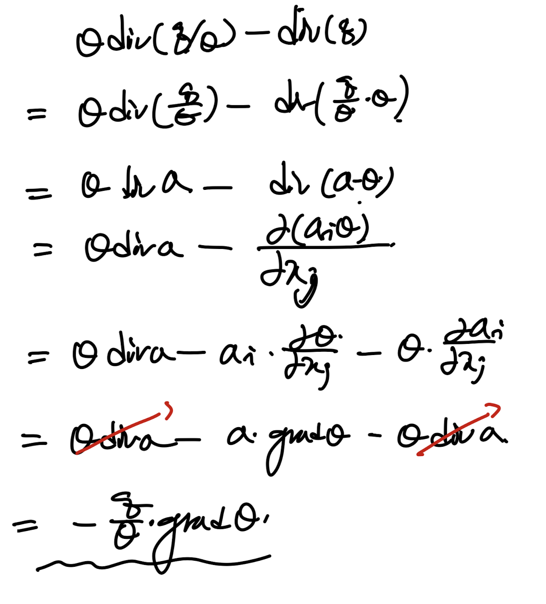
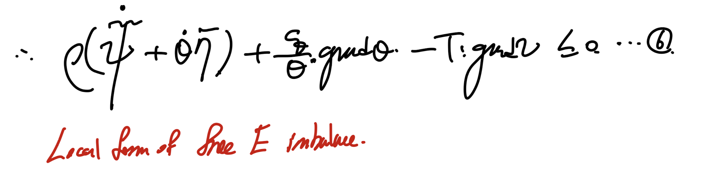
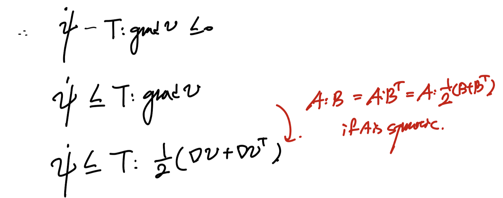
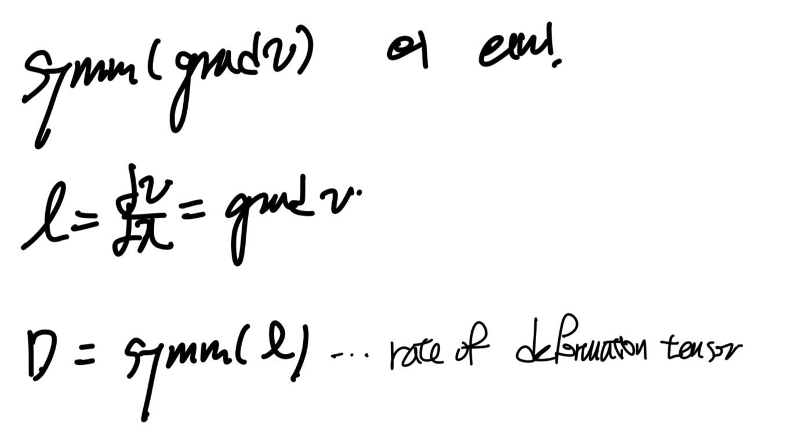

Ch4 Balance principles - part3 (Energy balance)
지난시간까지
mass balance,
linear and angular momentum balance
에 대해서 알아보았고,
가장 중요한 energy balance에 대해서 마지막으로 알아보자.

Spatial configuration of the body

위 상황에서 열역학 제 1법칙 에너지보존법칙을 적용하자.

body 내부의 에너지 총 변화량 = 받은 heat rate + 받은 외부로부터 power
(모두다 단위가 (J/s)인 것을 명심하자)
먼저 총 내부에너지 (시간변화량 말고) 그냥 총 내부 에너지 전체량은
다음과 같이 internal E per unit mass를 전체 mass에 대해서 적분해준다.
(dm =
ρ
dv)

All the symbols are spatial description!!!!!!
그다음 pt 영역안의 각 점들의 움직임 -> 운동에너지

(주의할점은 위의 값들은 에너지 총량이고,
밑에 등장하는 값들은 에너지 per sec이다)
이제 surface of body로 출입하는 열 + body안에서 생성되거나 supply받은 열

그리고 이제 외부에서 받은 에너지/sec -> power를
traction vector, body force vector로 표현해보자.

이렇게 구한 4가지 항을 이제 다시 열역학 제 1법칙에 대입해주자.

정리하면 총 5개의 적분항이 나오고, 그중에서 3가지 항을 변형시켜보자.

주의할점은 1번항의 시간 미분항이 Material time derivative라는 점.
가장먼저 1번항을 정리해보면,

https://jeffdissel.tistory.com/176
Ch4 Balance principles - part1 (mass balance and RTT)
지금까지 정리한 모든 stress, deformation, motion을 정의한 이유는바로 balance prinicple 을 이용하여 결국, 방정식을 세우기 위함이다. 이번 쳅터에서는 mass balance,Linear momentum balanceAngular momentum balanceEne
jeffdissel.tistory.com
(RTT - Reynolds Transport Theorem을 이용하여 위의 식으로 표현가능하다)
(자세한 내용은 위 링크 블로그 마지막 증명과정에서 설명)
2번항은 계속해서 등장하는 Divergence theorem을 이용하여,
surface integral -> body integral로 전환가능하다.

3번항이 다소 복잡하다 Cauchy's Theorem ( t = Tn )을 사용하면 tensor가 등장하기 때문이다.
따라서, 복잡한 경우 index notation으로 전환시켜주고 -> divergence Theroem을 통해서,
전개해주면 다음과 같이 유도가능하다.

Tij dvi/dxj = T:gradv 인것 i,j가 dummy index여서 반복하는데 둘다 tensor이므로 : 즉 contraction을 사용해야한다.
자 간결하게 표현한 3가지 식을 처음 2번식에 대입해주고 volume integral로 묶어주자.

우항을 넘겨주고 묶어주면, Cauchy's 1st eq of motion 항이 나온다!

따라서 정리하면 3번식이 도출된다.
모든 영역에 대해서 위식이 만족해야하므로,
local form으로 전환이 가능하다.
local energy balance eq 3 도출

이렇게 local form으로 전환이 가능한 이유는?
맨처음에 Pt를 정의할때 임의로 Bt에서 골랐기 때문에,
만약에 국소로 작은 점의 크기로 자르더라도 성립해야한다.
따라서 local form 3번식으로 도출가능.
Spatial configuration of the body
자 여기가까지 energy balance식을 유도하였고,
이제 Entropy imbalance - 열역학 제2법칙을 적용해보자.
total internal energy를 유도했던 과정과 동일하게 우리는,
specific entropy per unit mass를 전체 영역에 대해서 적분하면,
Net Entropy of Pt region을 구할 수 있다.

여기서 entropy flux를 살펴보자.

열역학 시간에 배웠지만, entropy는 결국 heat flux가 존재하면,
entropy flux도 생긴다.
(사실은 entropy flux -> heat flux라고 생각하는게 맞다)
그리고, entropy가 heat generation처럼
body 내부에서 generate 하거나 supply받을 수 도 있으므로,
우리는 Total Entropy flux를 다음과 같이 정의 할 수 있다.

Total entrop flux = in and out entropy across the surface and generated entropy on the body
자 위에 total entropy flux와 total interal entropy를 정의하고,
열역학 제 2법칙을 한번 살펴보자.
(분명히 우리는 배웠다는 사실 하지만 까먹었다 저도..)
[열역학 제 2법칙]
분명히 존재하지만 죽어가는 뇌기억세포를 살려보자.
일단 엔트로피는 다음과 같이 정의되었다.
dQ/T = ds
(
열출입 -> 엔트로피 변화
)
그리고 등장한 부등식 한개.

Clasisus Inequality (for closed system)
위
수학식은 결국 어떠한 문장을 단순하게 표현한 한가지 방식
일 뿐이다.
그렇다면 저 수학식은
어떤 문장
을 함유하고 있는지를 알아차려야 한다.
[문장의 의미]
" (From Entropy definition),
열의 입출입 across the system surface 으로 인한, entropy 변화량(flux)보다
system 내부 총 엔트로피 변화량이 더 크다"
→ 왜???? "비가역성으로 인해
추가적인 엔트로피가 생성되기 때문"
즉 열이 이동하는 과정자체 가 시스템의 엔트로피를 증가 시키기 때문에
(if and only if the process is irreveresible)
(너무너무나도 중요한 핵심이다 그 과정자체가 엔트로피를 증가시킨다)
쉽게 생각하면,
어떠한 은행에 동전 500만원을 넣었다,
근데 잔고가 + 550만원이 된 상황;;;
분명히 500만원을 넣었는데????
정답: 넣는 행위자체가 잔고를 증가시켰다 (like 이자)
(단, 이자가 부여되는 조건은 내가 잔고에서 돈을 빼지 않는다는 조건)
즉, 넣는 것은 가능하지만 똑같은 양을 똑같은 경로로 빼는 것은 불가능하다
(적금 조건)
-> Definition of irreversible process.
이제 위 열역학 제 2법칙을 우리 system에 적용시키면,
내부 총 엔트로피 변화량 >= total flux of entropy
"시스템 전체의 엔트로피 증가는
경계에서 들어온 엔트로피
+ 내부에서 생성된 엔트로피
보다
크거나 같아야
한다"
Net entropy in the body region Pt
Total entrop flux = in and out entropy across the surface and generated entropy on the body
위에서 유도한 두값을 가지고 그대로 부등식을 세우고 정리하면

Reynolds Transport Theorem and divregence Theorem are used.
자 이제, 처음에 구했던 Energy balance Eq - 3번
그리고 방금 구했던 부등식 - 4번 방정식을
연립해보자.

연립해주면 5번 부등식이 유도된다.

5번식의
θ
div(q/ θ ) - div q
를 정리하면 다음과 같이 간결하게 표현된다

쉽게 정리하기 위해 a = q/θ라고 치환했습니다.
이제 다시 5번식에 정리한 표현을 대입하면 간결한 5번식으로 reborn

여기서 갑자기 새로운 개념이 등장한다.

일단 어떤 물리적의미를 가지고 있는지 보기전까지 치환했다고 생각하자.
그리고 5번식에 위 정의한 Helmholtz Free E를 대입해주면,

local form of free E imbalance.
그리고, Dissipation을 다음과 같이 정의할 수 있다.

(유체역학 시간에 배웠지만, viscous dissipation rate 즉 얼마나 viscous force로 인해서
mechanical energy가 thermal energy로 손실되는가를 보았었다.
그 dissipation이 irrveresible process이기 때문에 위 inequality가 성립
즉, 무조건 양수라는 것이다.
만약에 여기서 isothermal 가정 즉 온도변화가 body에 시공간에 대해 없다고 가정하면,

그리고 per unit mass -> unit volum으로 바꾸어 주자.

그리고 6번식에 대입해주면,

contraction property 이용.
여기서 v는 spatial velocity vector임을 명심하자.
위에 tranpose를 만들면서까지 변형시킨 이유는 symm(gradv)로 바꾸기 위해서 이다.
그리고 symm(grad v)는 Stretching tensor라는 것은 ch2에서 다루었다.

위에서 어떻게 strain tensor의 time rate로 전환했는지를 살펴보자.

여기서 strain tensor(small deformation)의
정의를 살펴보면 displacement gradient(u)로 표현된다.

u(X,t) = x(X,t) - X의 displacement vector 정의자체를 가지고,
그대로 식에 대입하게 되면,
De/Dt = symm(grad v)를 도출하게 된다.
여기서
Material time derivative
of the strain tensor임을 조심하자.
이후에, 그대로 우리가 열역학 제2법칙을 토대로 유도하였던 최종식에 대입해주자.

그냥 대입해주면 최종적으로
Cauchy stress tensor,
the rate of strain tensor의
contraction Form이 도출된다.

즉, IsoThermal, small deformation 가정에서
body의 rate of strain tensor
시간에 따른 변형 자체와
Cauchy stress tensor가
free energy보다 무조건 크다는 것.
저 식의 물리적의미를 깊게 이해하기 위해서는
결국, free energy가 의미하는게 무엇일까?
라는 질문으로 이어지게 된다.
해당내용을 다음 글에서 다루어 보자.